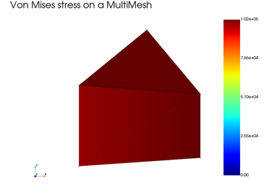
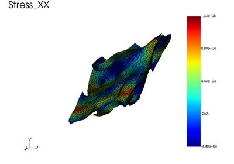
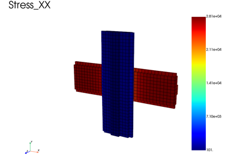
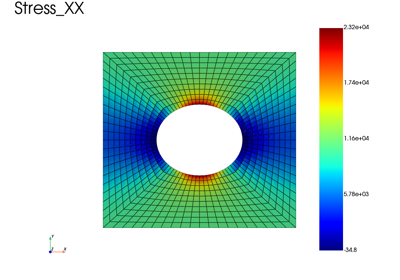

Boundary conditions and constraints
Periodic boundary conditions (2D, 3D, in-plane and off-axis), mean value constraints, rigid ties and mean motion constraints, pressure loads, and problems that combine several meshes.

Analysis and visualization of a multi-mesh model
Analysis and visualization of a multi-mesh model

Off-axis tensile test on a gyroid unit cell with periodic boundary conditions
Off-axis tensile test on a gyroid unit cell with periodic boundary conditions

In-plane periodic boundary conditions on a woven composite ply
In-plane periodic boundary conditions on a woven composite ply

Periodic BC without node pinning: mean displacement constraint
Periodic BC without node pinning: mean displacement constraint